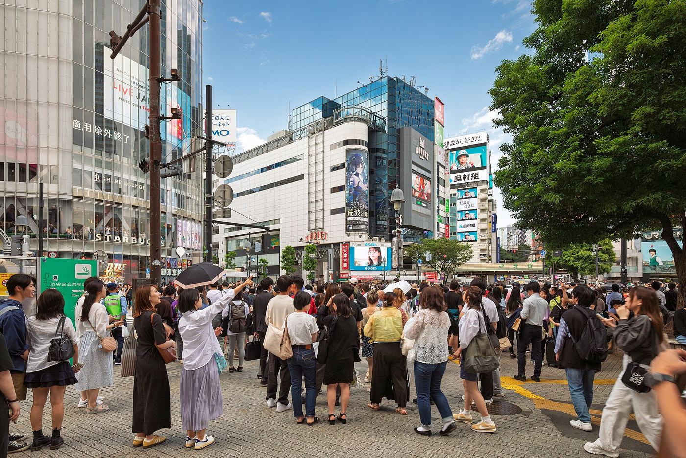
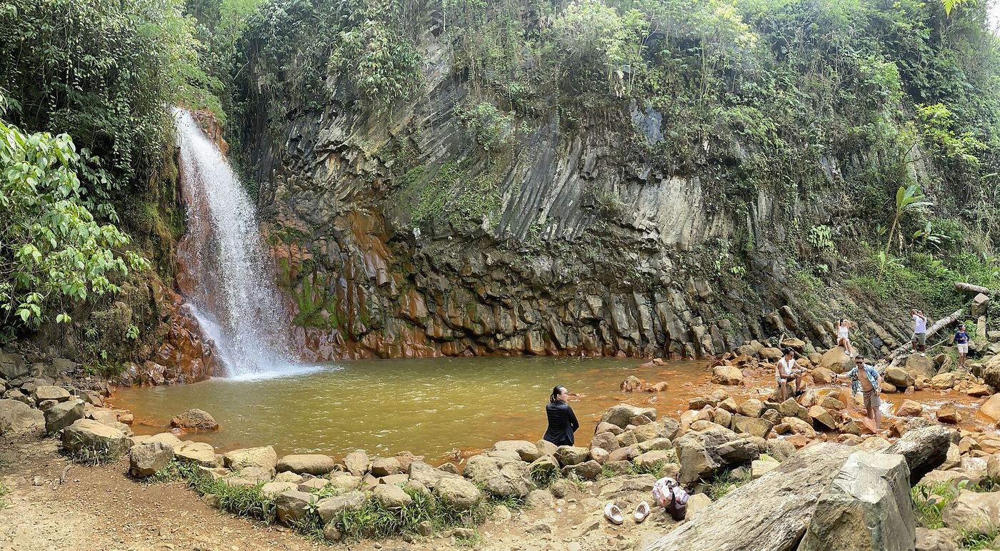

Module 5: Environmental & Social Aspects of Sustainability
Sustainability is not merely an engineering challenge—it is fundamentally a social and ethical framework. Shifting from extractive consumerism to a sustainable future requires balancing public health, nuclear/clean energy, social order, sharing economies, demographic stability, and biodiversity conservation.
Drag to orbit — global population & biodiversity, live 3D

Health, Energy & Ancient Civilizations
Preventive healthcare, pandemics, nuclear energy, afforestation, low-carbon economies, and ancient river valley civilizations.
Explore Health & Energy →Interactive Labs
Experiment with sharing economy classifications and test Malthusian population vs. food supply curves in real-time simulations.
Open Labs →Society & Social Structures
Cultural ecology, cultural selectivity, social practices, social order, and the UN Millennium Development Goals.
Study Society →Sharing & Collaborative Economy
Sociological water scarcity, P2P marketplaces, time banking, social capital, and U.S. resource consumption ratios.
Examine Sharing Models →Population & Development Goals
Malthusian theory, Global Footprint Network, demographic fertility transitions in Singapore and China, and food waste metrics.
View Population →Ecology, Species & Habitats
Invasive species, habitat fragmentation, flagship species, coextinction, and IUCN biodiversity conservation frameworks.
Dive Into Ecology →Health, Energy & Ancient Civilizations
Public health, nuclear power, atmospheric protocols, and foundational energy systems form the bedrock of sustainable human communities.
Using the most successful and cost-effective medical care to ensure the healthiest possible population, stopping illnesses before expensive reactive treatment is required.
An epidemic of infectious disease that spreads across a large geographical region, affecting multiple continents or worldwide.
Energy generated from the center of an atom (fission or fusion processes).
The process of planting trees in a region where trees did not exist before, creating new carbon sinks to absorb atmospheric carbon dioxide. (Note: Distinct from reforestation, which is replanting where forests previously stood).
An economy that releases a minimal amount of greenhouse gas emissions into the atmosphere, transitioning away from fossil fuel combustion.
Historical and statistical baselines reveal the scale of global vulnerability and medical targets:
In the year 2000, approximately 9.6 million children under the age of five died worldwide due to preventable health and nutrition crises. Achieving UN MDG survival targets helped reverse this trajectory.
Early human civilizations developed primarily along fertile river valleys such as the Tigris, Euphrates, and Nile rivers, mastering seasonal hydrological cycles. (Ontario is a North American lake, not an ancient river valley).
Interactive Labs
Apply social and economic concepts dynamically through guided interactive simulations.
Lab 1: Sharing Economy & Economic Practice Lab
Classify real-world socio-economic scenarios into the correct economic practice category. Click a scenario, then click its matching category.
Lab 2: Malthusian Theory Population vs. Food Supply Simulator
Adjust the time elapsed slider to observe Thomas Malthus's prediction: human population increases exponentially while agricultural food supply increases linearly.
Society & Social Structures
Societal values, cultural institutions, and global development frameworks dictate how human groups inhabit ecosystems.
The academic study of the interactions between a human society and its natural environment.
Collective social forums that serve a common purpose based on shared community values.
Routine behaviors and activities that societies perform based on collective customs and cultural values.
The social structures, social institutions, and social practices that perpetuate and stabilize a society.
Global coordination requires standardized development benchmarks:
The United Nations' list of eight targets designed to improve the quality of life and health in developing nations, including targeting child survival rates.
Population, Consumption & Development Goals
Demographic trajectories and ecological accounting dictate planetary sustainability limits.
The international research organization that measures humanity's ecological footprint and biocapacity, calculating how fast consumption outpaces Earth's regeneration.
Thomas Malthus's population theory stating that human population increases exponentially while agricultural food production increases linearly.
The demographic shift where birth rates decline as nations industrialize. In Singapore, fertility rates fell below replacement level due to delayed marriage ages and urban economic pressures.
China amended its strict 1979 one-child policy in recent years to rebalance its rapidly aging population and workforce age ratios.
Globalization is worldwide economic and cultural interconnectedness. Emerging countries are nations undergoing rapid industrialization between developing and industrialized status.
By 2015, global child survival targets under the UN Millennium Development Goals aimed to lift survival rates to 92%.
Ecology, Species & Habitats

Preserving biodiversity corridors and combating invasive pressures maintains ecosystem resilience.
Any non-indigenous living organism introduced into a new ecosystem where it proliferates, outcompetes native species, and disrupts ecological balance.
The breaking apart of continuous natural ecosystems into isolated, disconnected patches caused by human infrastructure and urban development.
Popular, charismatic animals (such as pandas, tigers, or whales) selected as symbols to rally public support and funding for conservation causes.
The cascading disappearance of interdependent species that rely on one another for survival (e.g., a specialized flowering plant going extinct when its sole pollinating insect disappears).
Module 5 Exam Simulator
This self-marking exam simulator draws 20 random questions from our 102-question question bank covering every Module 5 concept. Click an answer to receive immediate feedback.
If you want to know more about this, visit these sites.
- Explore global health statistics, preventative care guidelines, and pandemic data: World Health Organization (WHO): Global Health Observatory
- Review United Nations population trends, fertility rates, and demographic shifts: United Nations Population Division
- Investigate ecological footprints, biocapacity, and resource consumption ratios: Global Footprint Network
- Examine biodiversity conservation, endangered species, and habitat fragmentation: IUCN Red List & Conservation Hub
- Learn more about sharing economies, collaborative consumption, and time banking: Sharing Economy Research Center
- Access environmental science lessons on human populations and ecosystems: Khan Academy: AP Environmental Science & Ecology